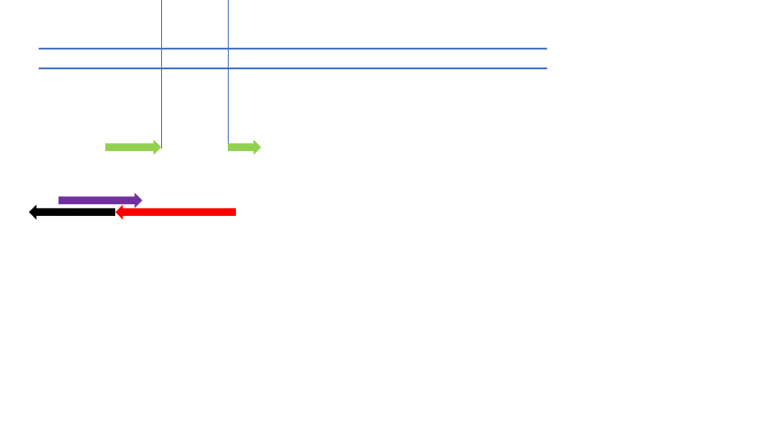

Concept
This page describes our molecular robot, "Quorum Hacker," which inhibits quorum sensing and prevents biofilm formation.
"Quorum Hacker'' consists of a giant unilamellar vesicles (GUVs) as the basic framework, a sensor part consists of DNA aptamers and a DNA-based transmembrane signalling system, a processor part consists of a circuit for detecting the concentration of quormone, and a circuit for amplifying the DNA aptamers used for quorum sensing inhibition, and an actuator part consists of the mechanism triggered by the DNA signal, which induces membrane fusion of the encapsulated liposome and GUVs."Quorum Hacker" releases the DNA aptamer through the pore formed on the surface of the GUVs by membrane fusion to inhibit quorum sensing among biofilm-forming bacteria.
Sensor
The sensor part of “Quorum Hacker” is composed of three parts described below.
1. DNA aptamer which detects C4-HSL (quormone)1)
2. DNA-based transmembrane signaling system2)
3. DNA-converter which releases Output 2 in accordance of Input 1 (the output of DNA-based transmembrane signaling system)
When the DNA aptamer detects the quormone, Output 1 is released as a signal, and two transmembrane DNA strands on the giant vesicle (complementary DNA to the respective left and right ends of Output1) are connected via Output 1.
Inside the transmembrane signalling system across the lipid bilayer, a strand displacement reaction of Input 1 triggered by complexation of the transmission mechanism releases a short DNA strand of about 30 bases as Output 2. Output 2 activates the processor part.
Processor
The processor part of “Quorum Hacker” is composed of two DNA circuits described below.
1. Quormone concentration detection circuit3)
2. DNA amplification circuit which produces DNA aptamer3)
The concentration detection circuit modifies the end of Output 2 by a drain and inhibits subsequent enzymatic reactions, and DNA amplification is withheld until a certain threshold is exceeded. When the amount of Output 2 exceeds the threshold, the concentration detection circuit overflows, which activates the DNA amplification circuit, and the mass synthesis of aptamers initiates.
The amplification system with PEN toolbox
The prevention of DNA amplification with drain
Actuator
The actuator part of “Quorum Hacker” is composed of three parts described below.
1. PEG-DNA complex shield which prevents the membrane fusion4)
2. pore formation peptide Magainin 2 which creates the pore for releasing DNA Aptamer5)
3. small liposome composed of part 1 and part 2
The PEG-DNA complex shield modified on the liposome is degraded by strand displacement reaction upon recognition of Output 2, allowing the liposome to fuse with the outer GUVs by diffusion.
Membrane fusion introduces a pore formed by Magainin 2 on the liposome in advance into the GUVs, and aptamers are released outside through the pore.
The aptamers released to the environment bind with quormone and inhibit quorum sensing, which leads to the prevention of biofilm formation.
Supplements
The sensor for "Quorum Hacker" presented here is a DNA aptamer1) that has been reported to bind with C4-HSL, a quorumone released by Pseudomonas aeruginosa, which is known to form biofilms. Although the membrane fusion mechanism was not tested or simulated during the period, it is highly feasible because previous reports of the semipermeable property shown with Magainin-2 have confirmed that a polymer as large as 32 nt ssDNA can permeate through the membrane. In addition, the use of lipid molecules such as DOPE and cationic lipids, which promotes membrane fusion, would enable to construction of a system suitable for membrane fusion.